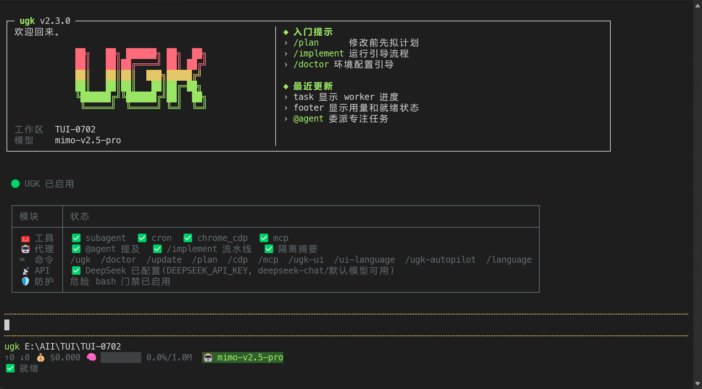
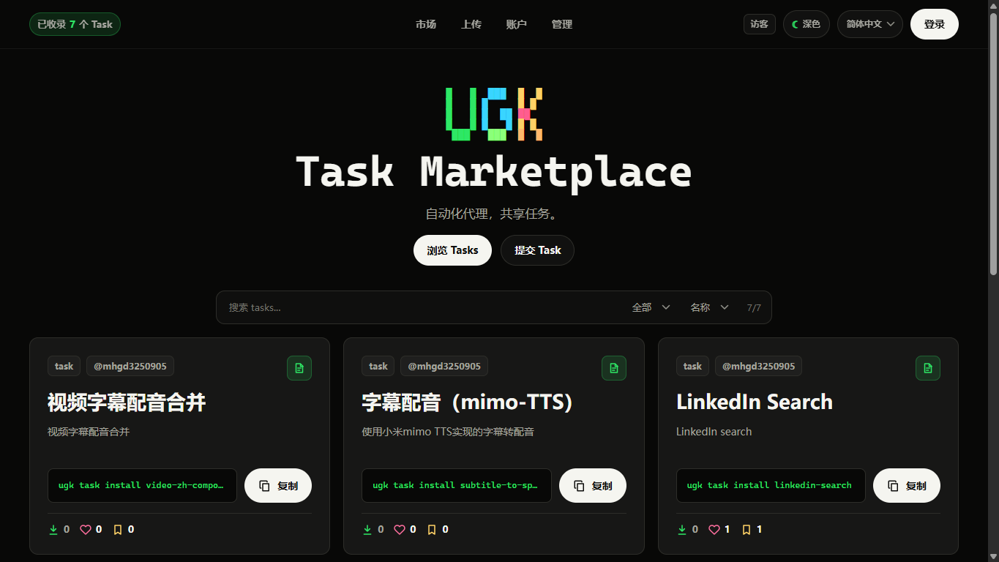

说目标
不用写流程图，直接描述你要的结果。
从整理资料、批量处理文件，到打开网页检查信息。UGK 把“怎么操作”交给 AI，把“要不要执行”留给你。

UGK 的体验重点不是给你一堆按钮，而是把目标拆成可确认、可执行、可检查的步骤。
不用写流程图，直接描述你要的结果。
从市场套用别人已经打包好的能力。
关键动作前确认，结果出来后可检查。

官网不用堆技术名词，直接告诉用户哪些日常工作可以少动手。
文件命名混乱、资料散落、下载夹爆炸时，让 UGK 按你的规则收拾。
打开网页、对比内容、截图记录。
重复下载、转换、复制、移动。
把执行结果整理成清单或文档。
从市场安装 Task，先跑通，再按自己的工作方式调整。
围绕当前任务读取必要上下文，不靠你反复解释。
浏览器、文件、命令和 Task 能连接起来执行。
授权、发布、敏感操作保留明确确认。
可以。你可以先从 Task 市场安装现成任务，再用自然语言描述要处理的内容。
它是 UGK 的自动化任务库，里面的 Task 可以安装到本地 UGK 使用。
不会。涉及登录、发布、授权等关键动作时，流程会保留确认。